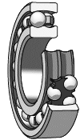
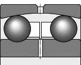
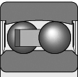
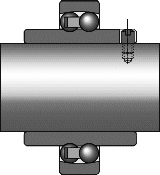

翔盛技研有限公司
翔盛技研有限公司，為專業的傳動零件代理商，線性滑軌、滾珠螺桿、直線軸承、軸心等產品銷售及專業服務。
客服專線：(03)280-6015

自動調心滾珠軸承有兩列球，外圈有一個共同的凹型球面滾道。因此軸承是自動調心的，不受軸相對於軸承箱的不對中影響。特別適用於那些可能產生相當大的軸撓曲或不對中的軸承應用場合。而且自動調心滾珠軸承在所有的滾動軸承中摩擦最低，即使在高轉速下也能保持較低的溫度。
自動調心滾珠軸承有兩列球，外圈有一個共同的凹型球面滾道。因此軸承是自動調心的，不受軸相對於軸承箱的不對中影響。特別適用於那些可能產生相當大的軸撓曲或不對中的軸承應用場合。而且自動調心滾珠軸承在所有的滾動軸承中摩擦最低，即使在高轉速下也能保持較低的溫度。
產品特性
密封型自動調心滾珠軸承
自動調心滾珠軸承也有帶密封的，其接觸式密封件在軸承兩側，型號尾碼2RS1 附有薄鋼板增強型的密封件由抗油和抗磨損丙稀腈聚丁橡膠 (NBR橡膠)製成。密封件容許的工作溫度範圍從攝氏 -40 ~ +100度，也可容許短時間高達攝氏 +120 度的溫度。密封唇以輕壓的方式接觸內圈上一個光滑倒角。
帶延長內圈的自動調心軸承
帶擴展延長內圈的自調心球軸承，是根據使用商業級軸的低要求場合而設計。特殊的孔公差使得裝拆容易，擴展延長內圈之軸承用銷或螺釘以軸向定位在軸上，螺釘在內圈一側與開槽相扣如左圖，同時也防止內圈在軸上轉動。
允許速度
帶寬內圈的自調心球軸承所能允許的工作速度跟發熱程度或保持架穩定性及強度等一般標準沒有多大關係，但卻與軸承在軸上的定位方式密切相關。 因此產品表上只包括根據 h8 公差在軸上定位的限速數據。